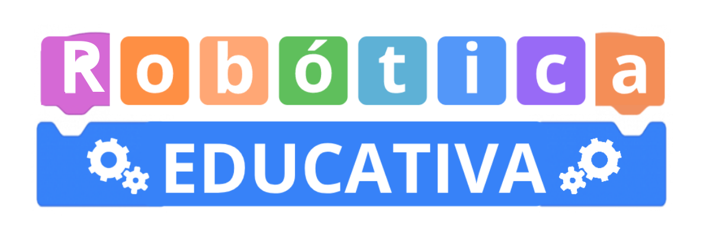
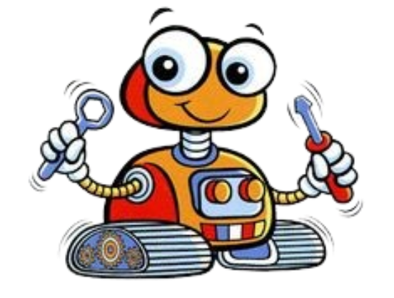
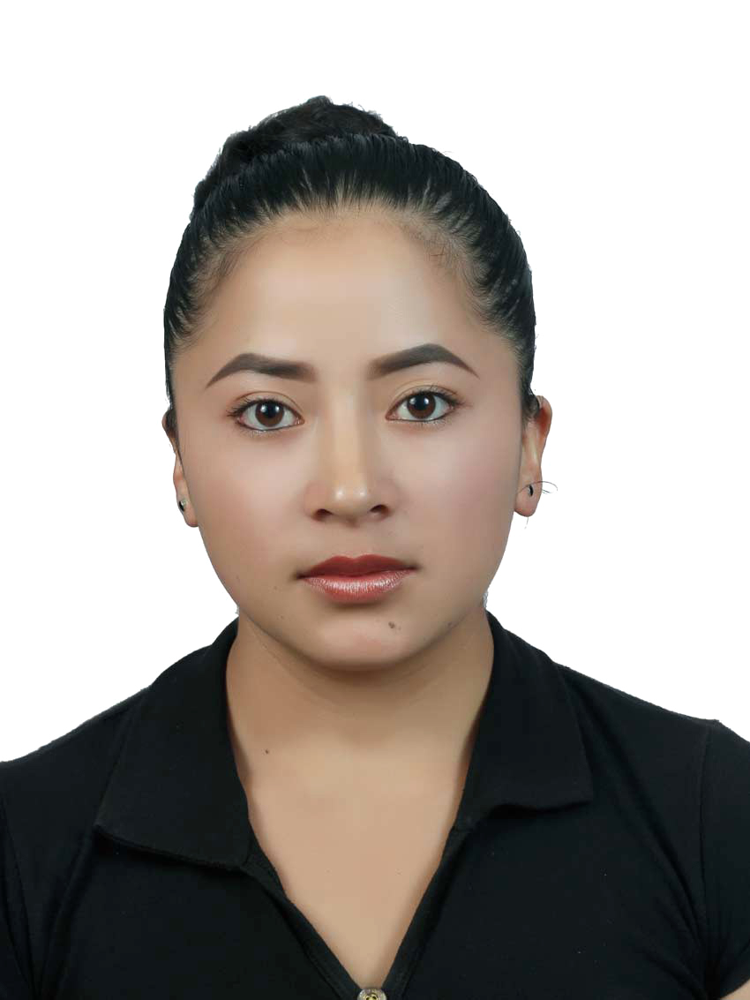
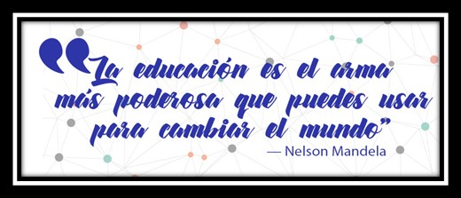

Bienvenidos a este portal educativo
Denominado: Tablero didáctico

Desarrolladores
|
 Elba Susana Paltas Moreno |
Vinicio Alexander Solano Merino |
|
Nathaly Silvana Paredes Guachizaca |
Guissela Nohemi Villavicencio Ponce |

El presente recurso incluye una serie de actividades diseñadas con el propósito de fomentar el uso del tablero didáctico interactivo, orientado a la simulación de circuitos básicos, facilitándo así la comprensión de los fundamentos de la robótica educativa. Este material está dirigido a los estudiantes, quienes podrán afianzar sus conocimientos mediante la realización de actividades prácticas, integrando herramientas digitales como Tinkercad y Arduino.
Requisitos previos:
Para aprovechar adecuadamente el curso, se recomienda que los docentes posean conocimientos básicos en:
- Manejo de herramientas TIC aplicadas al ámbito educativo.
- Conceptos elementales de programación (estructuras condicionales, bucles, variables).
- Fundamentos básicos de electrónica (componentes, polaridad, conexión de circuitos simples).
- Disposición para integrar metodologías activas en su práctica docente.